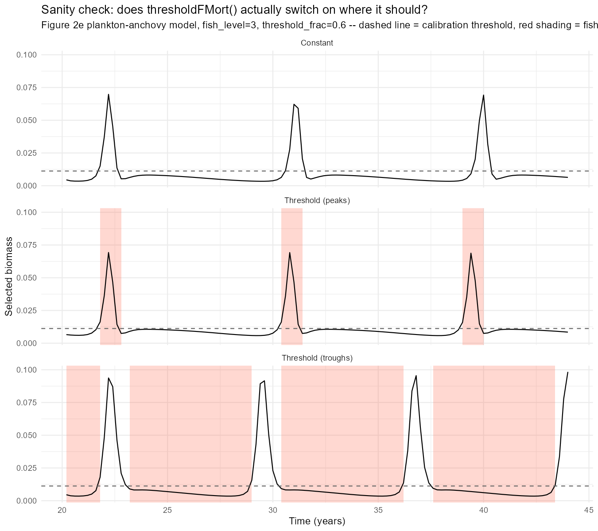
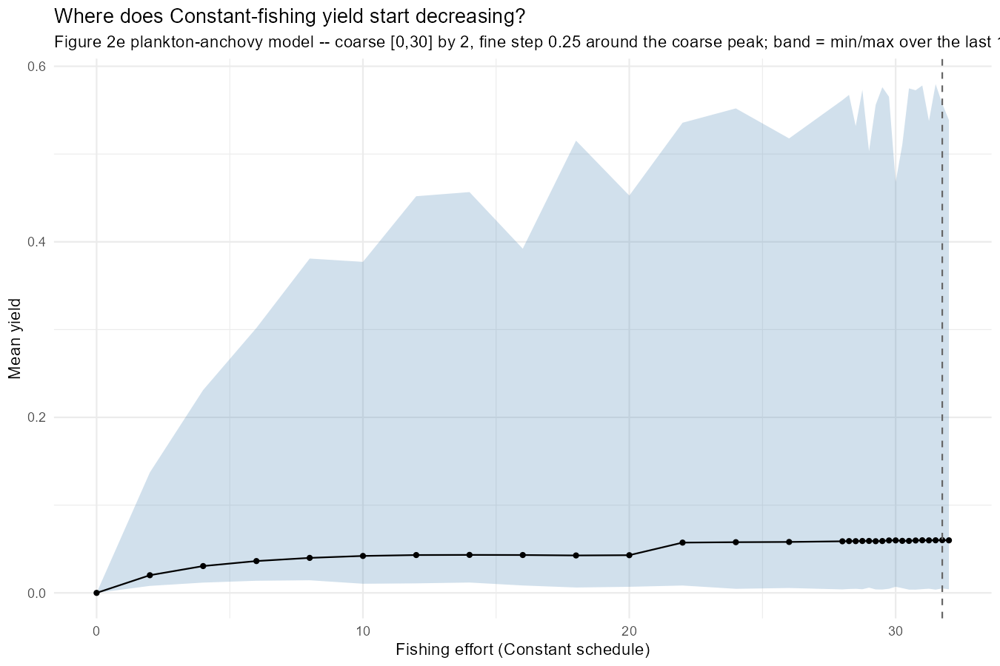
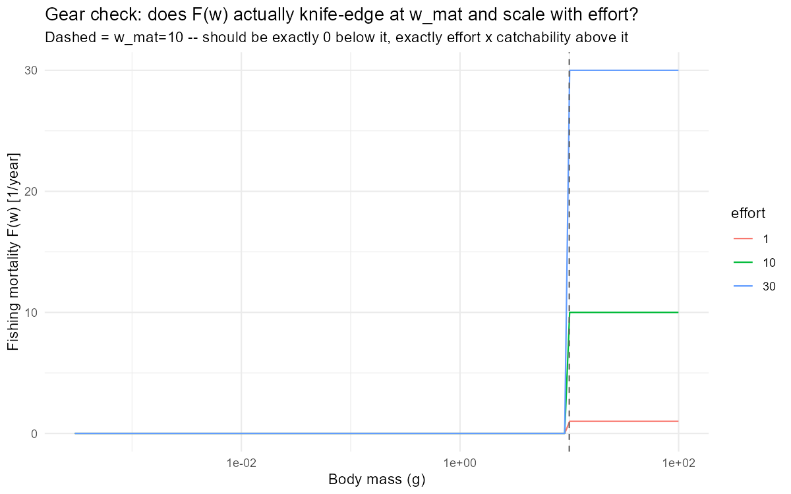
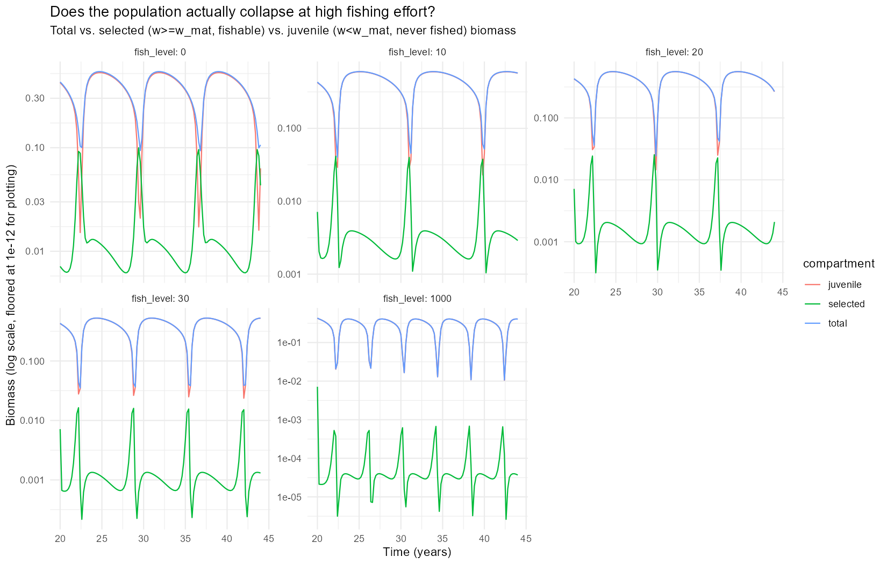
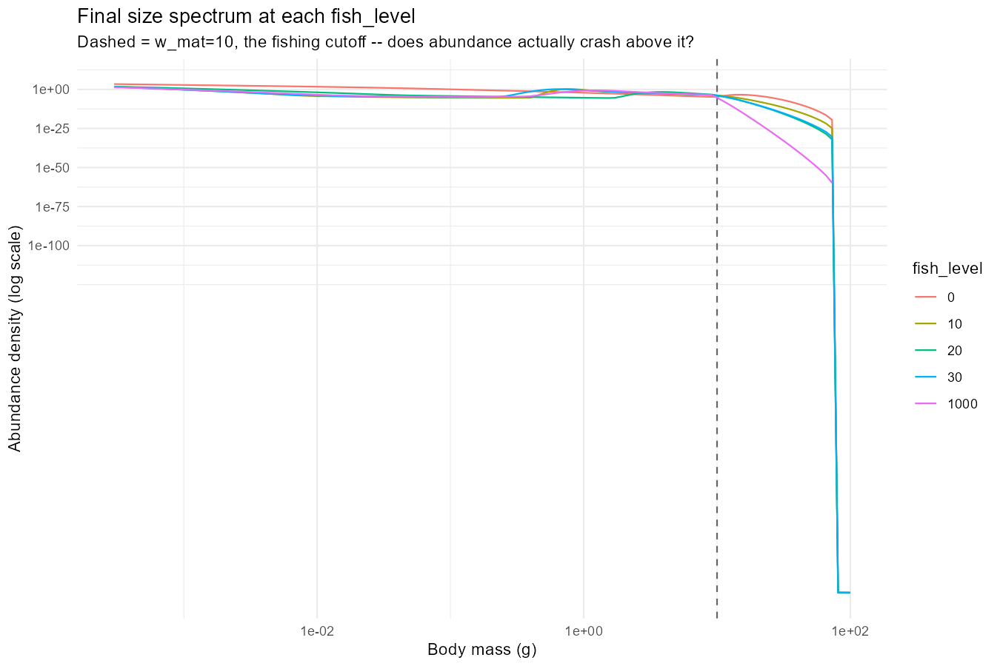
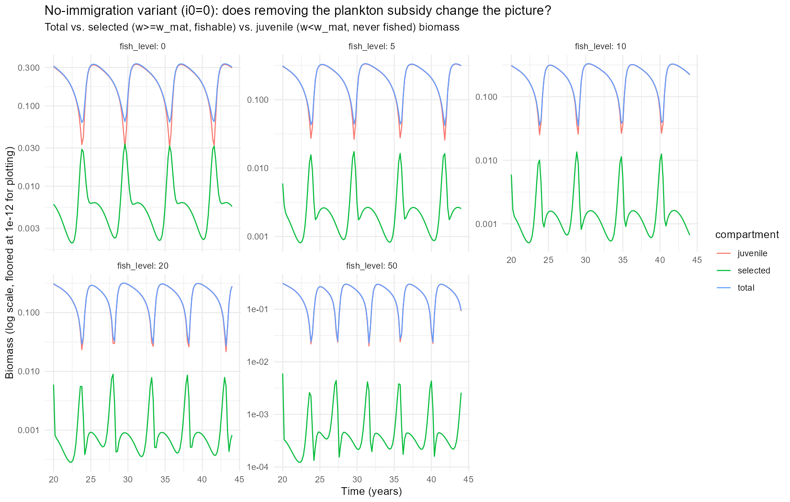
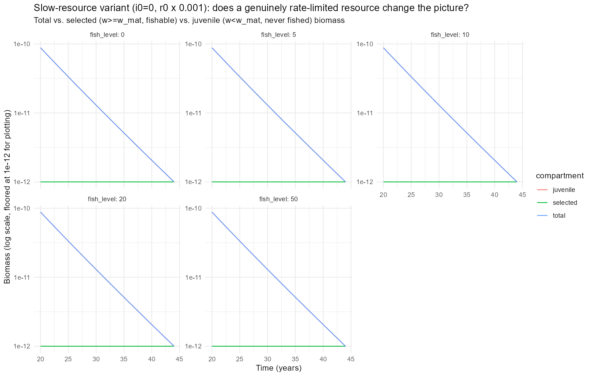
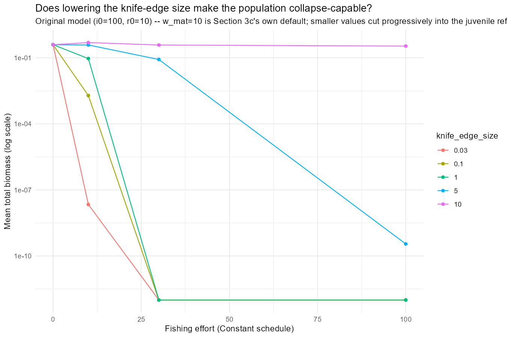
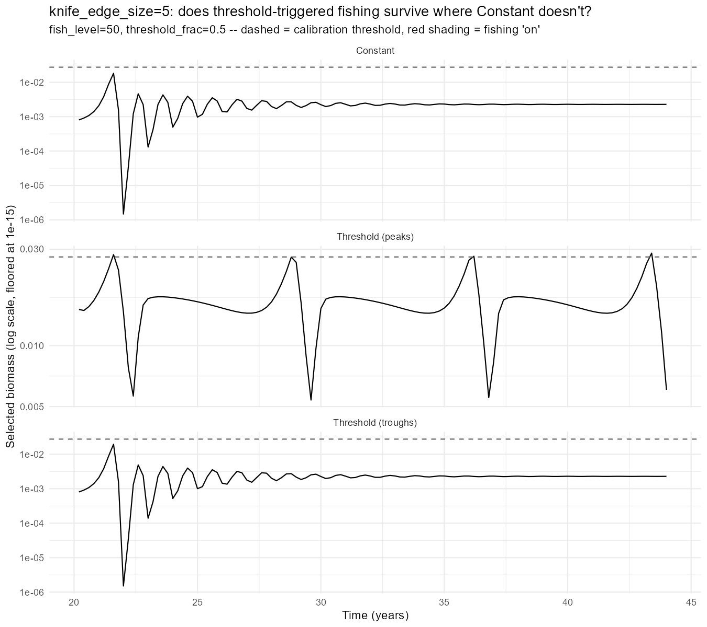
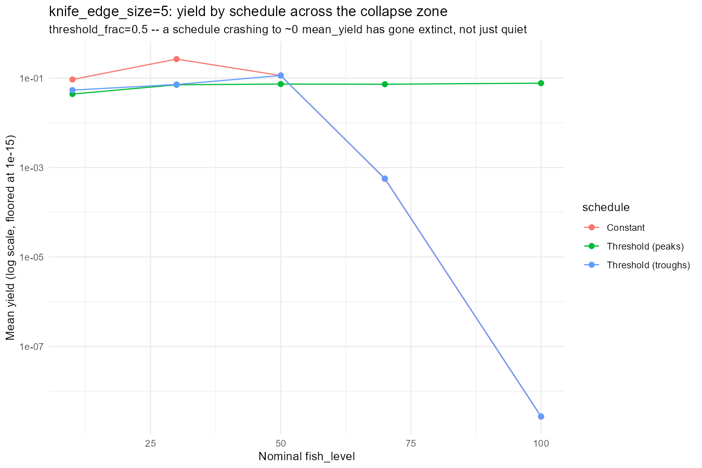

Day 38: Rebuilding the Threshold Rule, and a Model That Wouldn’t Collapse
Rebuilding on a Model That Actually Cycles
Day 37 closed with two live problems: the Anchovy model this project used from Day 18 onward had an erepro five orders of magnitude outside [0,1], and its simplest replacement (Day 4’s pure resource-decrease model) turned out never to oscillate at all. The fix was porting the actual published plankton-anchovy model (Canales, Delius & Law 2020) and finding that cannibalism alone (not the “full, realistic” configuration with larval mortality added back in) is what sustains a genuine limit cycle.
Today’s task was mechanical on its face: take Day 36’s threshold-triggered-fishing machinery (thresholdFMort(), attach_threshold_rule(), the effort/threshold scans) and rebuild it on that model instead. finding_jams/38_experiments.R does exactly that - the rate-function machinery itself is generic in params/sim and ports over unchanged. What actually happened today was less mechanical: the rebuilt model refused to do the one thing a fishing-rule study needs it to do, which took most of the day to run down.
Sanity Check: Getting the Threshold Right
Same pattern Day 36 established: before spending time on grid scans, one representative fish_level/threshold_frac, all three schedules, selected biomass plotted against the calibration threshold with fishing “on” periods shaded.
The first pass, at threshold_frac=0.5 (the cycle’s own median), showed Threshold (peaks) firing twice per cycle, once on the real peak, once on a smaller secondary crossing, cutting into the peak more than the rule was meant to. Raising threshold_frac to 0.6 fixed it: one clean firing window per cycle, right at the true peak, barely touching the peak’s own height.

The Effort Scan, and a Suspiciously Flat Constant-Fishing Curve
The first real scan (fish_level=[1,3,5,7,9], mirroring Day 36’s own range) didn’t show much as this model needed far more effort to register anything.This lead to a dedicated Constant-only scan: a coarse pass over fish_level=[0,30] by 2, then a fine pass zoomed on the coarse peak.

Mean yield rises from 0 and then just… sits there, wobbling around 0.05-0.06 from fish_level≈10 all the way to 30, never turning over. That’s not what heavy sustained fishing is supposed to do to a population.
Diagnosing the Flat Curve: A Cultivation Effect, Not a Bug
Rather than trust the plot blind or assume it was wrong, three separate checks:
Gear check. Does F(w) actually knife-edge at w_mat and scale linearly with effort, as intended?

Population structure, at fish_level=0,10,20,30,1000 (the last one a deliberate stress test) - total vs. selected (w≥w_mat, fishable) vs. juvenile (w<w_mat, never fished) biomass:


mean_selected collapses as expected - over 200x down from unfished to the fish_level=1000 stress test (0.0178 → 0.0000836). But mean_juvenile, which is over 95% of total biomass throughout, never follows it down. It’s actually higher at fish_level=10 (0.485) than unfished (0.374), and still 78% of the unfished level even at the stress test. The gear is knife-edge at w_mat and structurally can never touch anything smaller, and cannibalism (Day 37’s whole finding) is what normally suppresses the juvenile compartment. Fishing out the cannibalistic adults doesn’t just remove biomass; it removes the juveniles’ main predator. A real, published phenomenon in cannibalistic size-spectrum models (de Roos & Persson 2002, PNAS; the “cultivation effect” literature going back further than that), not an artefact of this port.
Transient-length check, in case 24 years just wasn’t long enough to see a real decline: fish_level=30 run out to 100 years instead. Mean biomass over the last 12 years: 0.379 (Section 3b’s own 24yr window) vs. 0.415 (100yr run) so its consistent, not a truncated transient.
All three checks agree: the flat yield curve is real model behaviour, not a bug.
Trying to Make the Resource the Bottleneck
First attempt: the plankton resource is topped up every year by a constant external immigration term (i0=100) regardless of grazing pressure, so juveniles are never actually resource-limited once cannibalism eases. Removing it (i0=0) was the most surgical change available.

A weak, non-monotonic probe. mean_juvenile dips at fish_level=20 then partly recovers at 50. The subsidy wasn’t the load-bearing piece. Next lever: the resource’s own regrowth rate, not just the top-up - the same resource_decrease trick Day 4/18 used on a resource_semichemostat resource, applied here to r0 (rr_pp = r0 * w_full^(rho-1)). Reusing Day 4/18’s own convention, resource_decrease=0.001:

Too severe - min_total=1e-12 even unfished. The standard settle+kick recipe knocks the population down by 10^7 right after the 10-year settle; with the resource regrowing 1000x slower, there’s no recovering from that combined with the kick, fished or not. A calibration sweep followed, resource_decrease from 1 down to 0.005, unfished only:
The Key: The Gear’s Own Blind Spot
The resource-scarcity approach was fighting the wrong mechanism. Section 3c’s own diagnosis was structural, not resource-driven: the gear is knife-edge at w_mat=10 and never touches anything smaller. Lowering knife_edge_size below w_mat, on the original model (i0=100, r0=10 – full subsidy restored), removes that blind spot directly instead of trying to starve the whole system.

At the original knife_edge_size=10, the population barely notices fishing even at effort=100 – no genuine collapse risk. Drop it to 5, and there’s a real, graduated dose-response for the first time: healthy at effort=10, visibly stressed at 30 (~5x down), genuinely collapsed by 100 (9+ orders of magnitude down – actual extinction, not suppression). Go lower still (1, 0.1, 0.03) and it collapses almost immediately even at modest effort it’s too fragile to leave any working range.
knife_edge_size=5 was the one candidate with everything needed: real collapse risk at high sustained effort, and a genuine safe operating range at moderate effort.
The Headline Result: Rebuilding the Rule Comparison on a Model That Can Actually Collapse
Threshold-rule machinery rebuilt on knife_edge_size=5 - sanity check at fish_level=50, deliberately in the “at risk” zone, then an effort scan across fish_level=[10,30,50,70,100].

At fish_level=50, none of the three schedules have collapsed yet, but Constant and Threshold (troughs) both ring down hard right after the fork and settle into a flat, damped equilibrium, while Threshold (peaks) is the only one still showing a genuine sustained cycle, clean repeating peaks and troughs, never damping out. Threshold (troughs) behaves almost identically to Constant throughout. Its realised effort tracks the nominal fish_level almost exactly (mean_effort=49.97 at nominal 50), so it’s functionally the same schedule with a different name.

Constant traces a textbook overfishing curve: yield peaks at fish_level=30 (0.265, higher than at 10), then craters by 70 (0.00056, a 500x drop) and is functionally extinct by 100 (2.7e-9). Threshold (peaks) does something structurally different: its mean_effort saturates around 3-4 regardless of nominal fish_level (1.47 at nominal 10, only 3.90 even at nominal 100) because the burst itself gets shorter as the nominal intensity rises (effective_window shrinks from 0.8 years to 0.2 as nominal effort climbs). It isn’t fishing less because it was told to; it’s fishing less because a more intense burst depletes the peak back below threshold faster. mean_yield stays positive and roughly flat (0.044-0.077) across the whole tested range and never collapses, even at nominal fish_level=100.
That’s the result Day 36’s whole apparatus was built to find: on a model that can genuinely collapse, threshold-triggered fishing timed to peaks is structurally protected from the collapse that both Constant and badly-timed (troughs) fishing suffer at the same nominal effort. This is not because it happens to fish less, but because it can’t help but fish less once the peak it’s chasing gets thinner.
Two Issues With This Result That Need Addressing, Not Just Noting
Sitting with today’s headline result longer turns up two problems with it, both worth being explicit about rather than filing away as minor caveats.
The schedule comparison itself is flawed. “Constant” and “Threshold (peaks)” above are not a comparison of when to fish at a fixed average intensity - they’re two regimes with completely different floors. Constant fishes the full nominal fish_level all the time. Threshold (peaks/troughs) fishes nothing at all (background_level=0) except during its own firing window. So when Threshold (peaks) comes out ahead, part of that gap is genuinely about timing but part of it is just “fishing less overall,” dressed up as a schedule question. A fair test of whether timing matters has to hold the floor constant: run a baseline fishery all the time, and ask whether topping it up at peaks beats topping it up at troughs, or not topping it up at all.
The effort levels involved are not remotely realistic. Getting knife_edge_size=5 to show any dose-response at all needed fish_level from 10 up to 100 and the stress test in Section 3c pushed to fish_level=1000. Real fishing mortality F for actual exploited stocks is typically O(0.1-1)/year; effort in the tens-to-hundreds here isn’t “heavy fishing,” it’s several orders of magnitude past anything a real fishery could sustain or would be permitted to apply. That doesn’t make the qualitative mechanism (cultivation effect, gear-driven refuge, self-limiting peak-timed effort) fake but it does mean none of today’s specific numbers (which fish_level stresses vs. collapses the population, where yield peaks) can be read as calibrated to a real fishery. Worth understanding why this model needs such extreme effort before trusting any number that comes out of it at a more modest, realistic scale.
Both are being addressed directly: the schedule comparison is being rebuilt so every regime shares the same Constant floor and only the boost is targeted at peaks or troughs, and the unrealistic-effort question is being tracked rather than quietly assumed away. See item 1 below.
What’s Next
- Rework the schedule comparison itself. As flagged above, “Constant” and “Threshold (peaks)” are two independent, mutually exclusive fishing regimes with different floors, not a fair timing comparison. The fix: every schedule shares the same Constant floor (
background_level), and “Threshold (peaks)”/“Threshold (troughs)” only layer an extra boost on top of it near cycle peaks/troughs so the question becomes whether topping up an existing fishery during good (or bad) years beats fishing that same floor flat, not whether an intermittent fishery beats a continuous one from a standing start. Also carries forward the unresolved effort-realism problem: the floor and boost needed to see anything at all are still in the same unrealistic tens-to-hundreds range as today’s own numbers. - Test whether reducing cannibalism increases instability. Cannibalism is what’s driving the cycle in the first place (Day 37) and what’s protecting the juvenile refuge from collapse (today). Turning it down, rather than removing it outright as Day 37 already did, is the natural next probe: does a weaker cannibalism signal make the population more prone to instability, consistent with it acting as a stabilising feedback, or does it just shrink the cycle’s amplitude without changing collapse risk?